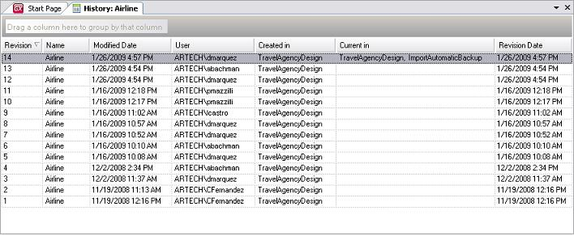
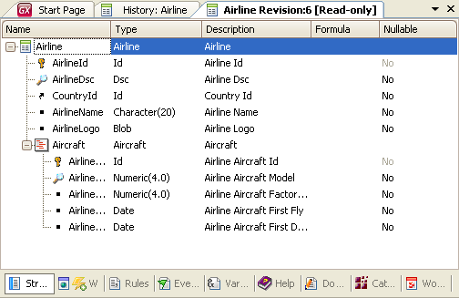
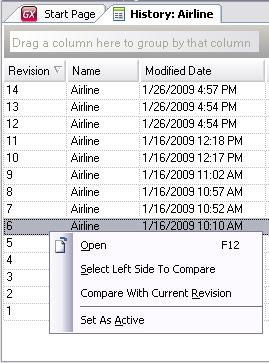
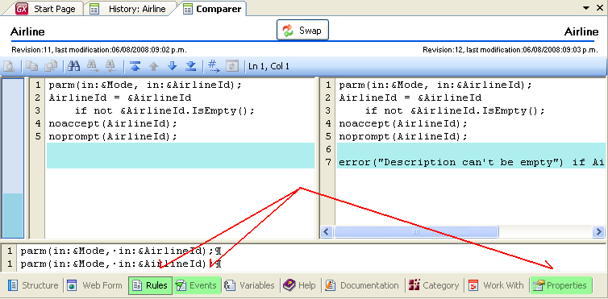
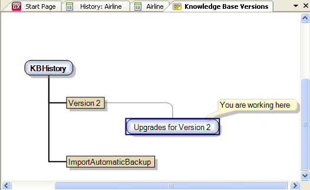
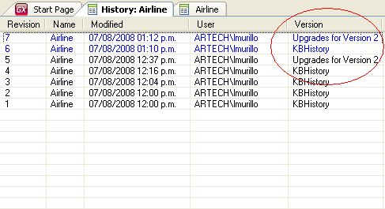
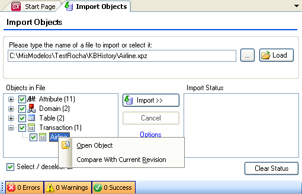

GeneXus keeps track of every change made to every object. If you right-click on the object in the Folder View (or on the attribute if you want to see the difference of a specific attribute) and select "History", you will view a list of all the previous versions of that object:  You can open any revision, which will be displayed in read-only form.  By selecting and right-clicking on two different revisions, GeneXus compares the selected revisions and shows the differences. You can also compare two revisions of an object of any type, as shown below: When viewing the history of an object, right-click on one revision and choose ‘Select Left Side To Compare’, right-click on the other revision to compare, and choose ‘Compare With <object> Revision: <nbr>’ (or with Current Revision).  Next, you will view both revisions in the Object Revisions Comparer and will be able to move through the tabs and see the differences.  When viewing the History of an object, a column is displayed that indicates the KB Version used to create that Revision. That is, if you have a Revision x which belongs to Version x of the KB and then, this object is modified in another Version of the KB (for ex. Version y), the Version column of the object History will indicate to which Version each Revision belongs. The last Revision in each Version will be displayed in blue. If you have the following Versions in the model:  There, after creating 'Upgrade for Version 2' the Airlines trn was modified, and the History window indicates in which Version each Revision was made.  Teamwork is facilitated by anticipating impacts. Before importing an object, you can open it and even compare it to the last Revision in the active Version of the KB into which you are importing objects.  Modified Date: represents the dates when an object was saved by a user. This date is updated with every Save1 that is preformed, and is distributed upon exporting an object and importing it in another KB. This date is not linear because upon importing the object in another KB, it may be assigned an earlier Modified Date than the latest one. Note1: The Merge operation is considered to be a save made by the user. This is because, even though it is automatic, the user is changing the object. Therefore the Bring Changes operation and Update From GeneXus Server will update the "Modified Date" when merging changes. Revision Date: is the date when a revision was saved, whether by a user or by any process that caused the generation of a new revision. This date is a monotonically increasing value.
|
| Backlinks |
| Commit to GeneXus Server |